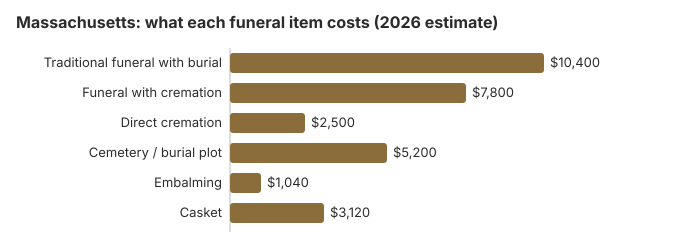

Funeral Costs in Massachusetts: What Families Pay in 2026
Funeral Cost Breakdown in Massachusetts
The state licensing board does not set prices, so a real Massachusetts quote can come in well above or below these lines.
| Service | Average Cost | Range |
|---|---|---|
| Traditional funeral with burial | $10,400 | $7,800 – $13,520 |
| Funeral with cremation | $7,800 | $6,240 – $10,140 |
| Direct cremation | $2,500 | $1,750 – $3,500 |
| Cemetery / burial plot | $5,200 | $2,600 – $10,400 |
| Embalming | $1,040 | $500 – $1,500 |
| Casket | $3,120 | $1,040 – $8,320 |
About these figures: we did not survey Massachusetts funeral homes. Each line is a modelled estimate meant for budgeting, and it is neither a price quote nor professional advice. Read how the estimates are built; the disclaimer covers the rest.
State sources: Massachusetts DTA.

Paying for a Massachusetts Funeral
- Because the Massachusetts DTA limit applies to the whole funeral bill, a simple burial or direct cremation is the usual way to stay at or under $3,500.
- The funeral home normally tells Social Security about the death, but a qualifying spouse or child still has to claim the one-time $255 payment, at 1-800-772-1213 and within two years.
- Whoever paid for a Massachusetts veteran's funeral can claim VA money on Form 21P-530EZ; for a non-service-related death on or after October 1, 2026, that is up to $1,032 toward burial and $1,032 toward a plot, as our veteran burial benefits guide explains.
- Medicaid, charities and other places Massachusetts families look for money are covered in our guide to funeral payment help and in what to do when there is no money for a funeral.
Educational Resources
- Payment Assistance GuideGovernment programs and financial help for funeral costs
- Insurance Plan ComparisonCompare coverage, premiums, and payout speed across providers
- Funeral Consumers AllianceIndependent nonprofit consumer advocacy for funeral rights
- Funeral Insurance GuideCompare final expense and burial insurance options
- FTC Funeral RuleThe federal rule protecting funeral consumers
- Best Burial Insurance CompaniesSide-by-side comparison of top burial insurance providers
Compare Funeral Costs
- Funeral Cost BreakdownEvery line item explained: know what you're paying for
- Average Funeral Cost in 2026National cost breakdown with real prices
- Cheapest Funeral OptionsLower-cost alternatives, with typical price ranges
- Cremation vs. Burial Cost ComparisonSide-by-side price comparison to help you decide
- How to Compare Funeral PricesStep-by-step guide to getting the best price
- Direct Cremation: Most Affordable OptionNFDA 2023 median $2,645 with a family-supplied container (latest available)
What Pushes a Massachusetts Funeral Bill Up or Down
Massachusetts prices start from high costs for land, labor and buildings, especially around Boston. Cemetery space is scarce and dear, which is one reason 58% of Massachusetts deaths now end in cremation, and where cremation is common, crematories and direct-cremation firms compete harder on price.
Choosing Between Cremation and Burial in Massachusetts
Cremation
- About $2,500 for direct cremation
- About $7,800 with a service
- No plot to buy unless you want one
- The memorial can wait until spring
- Chosen for about 58% of Massachusetts deaths
Traditional Burial
- About $10,400 for the service
- About $5,200 more for a plot
- Most cemeteries require a vault or liner
- Leaves a permanent place to visit
- A metal casket has a national median price near $2,500 (NFDA 2023 General Price List Study); sellers in Massachusetts charge more or less
Funeral Prices Across Massachusetts Cities
Our estimates for the largest Massachusetts metro areas:
Massachusetts Options From Cheapest Up
| Choice | Our estimate | What you get |
|---|---|---|
| Direct cremation | $2,500 | No viewing or ceremony; cremation no sooner than 48 hours after death (M.G.L. ch. 114, § 44). |
| Direct burial | $5,200 | A prompt burial without embalming or viewing; the cemetery bills the plot and opening on top. |
| Green burial | $5,720 | A natural burial: no embalming, and a shroud or casket that breaks down; only some Massachusetts cemeteries accept it. |
| Cremation + memorial | $7,800 | Cremation now, with a memorial whenever and wherever the family wants |
| Traditional funeral | $10,400 | Viewing, a funeral service and a graveside burial |
What Sets Massachusetts Apart (Northeast)
Massachusetts has one of the highest funeral-home densities in the country, which usually helps consumers: more providers means more pricing competition. However, ownership consolidation by Service Corporation International (SCI) and similar groups has concentrated some of the Boston market under a handful of brands. Ask each Massachusetts provider whether they are independently owned; independent operators in Massachusetts often undercut branded ones by 10-25%.
Massachusetts Cremation and Burial Pages
Two companion pages go further:
Cremation Costs in Massachusetts
Massachusetts cremation from about $2,500 direct to $7,800 with a service, along with urns, where ashes can go and memorial choices.
Burial Costs in Massachusetts
Plot (about $5,200), casket, vault, grave opening and headstone for Massachusetts, totalling $23,900 to $28,400.
Fees Massachusetts Families Often Miss
Quoted prices in Massachusetts rarely include every charge.
- An embalming line marked "required": in Massachusetts it rarely is.
Federal Rules That Also Apply
A Massachusetts home that breaks these rules can be reported to the FTC at ftc.gov, and the Funeral Consumers Alliance can advise on next steps.
A Short Massachusetts Checklist
There is usually more time than it feels like. Take these in order:
- Settle burial or cremation first: cremation in Massachusetts or burial in Massachusetts.
Getting Massachusetts death certificates, and what they cost
Where you order makes a big difference in Massachusetts. The state Registry of Vital Records and Statistics, at 150 Mt. Vernon Street in Dorchester, charges $20 a copy in person and $32 a copy by mail. Ordering online or by phone costs $54 for the first copy and $42 for each additional one, and mail requests can take up to 30 business days to process (Mass.gov, Registry of Vital Records and Statistics; checked October 29, 2026).
Copies can also come from the clerk of the city or town where the death happened, which is often quicker for a recent death; town fees are set locally, so ask before you go. The funeral director may also order copies on behalf of the closest relative and add them to the bill.
- Five copies cost $100 in person at the Registry and $222 online, so a trip to Dorchester or the town hall can pay for itself.
- Banks, insurers and the Registry of Motor Vehicles usually want a certified copy, not a photocopy.
- Check the funeral home's per-copy charge on its price list against these fees.
The Massachusetts board, state aid and veterans' graves
The Massachusetts Board of Embalming and Funeral Directing (617-701-8628) is the licensing body. It is the place to call about hidden prices, pressure sales or a home that will not give you its price list.
Massachusetts is absent from the Funeral Consumers Alliance roster of nine states that force families to use a funeral director for certain steps, which leaves room to do a good deal yourself; the paperwork, meaning the death certificate and a disposition permit, is still required. Cremation must wait 48 hours after the death (M.G.L. ch. 114, § 44).
State help with the bill
The Department of Transitional Assistance pays up to $1,100 toward the funeral of an eligible person, but only if the whole funeral costs $3,500 or less (Massachusetts DTA). With a $10,400 average traditional funeral in our table, that cap rules out most full services.
Burial for veterans
Massachusetts National Cemetery is in Bourne, on Cape Cod (508-563-7113); to reserve a grave, the funeral home calls the VA's National Cemetery Scheduling Office (800-535-1117). The two state veterans cemeteries, in Agawam (413-821-9500) and Winchendon (978-297-9501), take requests directly.
Before you sign in Massachusetts
- Get the General Price List from each home you talk to; the FTC Funeral Rule requires one when you visit in person.
- Ask what happens to an unembalmed body after 50 hours; the answer decides whether embalming is needed.
- Call the DTA before costs pass $3,500, not after.
- For a veteran, ask about Bourne, Agawam or Winchendon before buying a private plot.
- If a home will not show its prices, report it to the board at 617-701-8628.
Frequently Asked Questions
How much is a funeral in Massachusetts in 2026?
About $10,400 for a traditional service on our estimate, 25% over the $8,300 national median. A cremation with a service is nearer $7,800 and a direct cremation about $2,500; a plot adds roughly $5,200. Homes differ a lot, so get more than one price list.
Is cremation the cheaper route in Massachusetts?
A lot. Direct cremation at $2,500 is about $7,900 below the $10,400 traditional funeral, and about $13,100 below it once a $5,200 plot is counted.
What does federal law guarantee a Massachusetts family?
An itemized price list, prices over the phone, and a casket bought elsewhere accepted with no extra fee: that is the FTC Funeral Rule. The Funeral Consumers Alliance does not list Massachusetts as a state that makes families hire a funeral director. Complaints go to the Board of Embalming and Funeral Directing, 617-701-8628.
Where can a Massachusetts family save the most?
Shopping around matters most: price lists from two or three homes, read line by line, often differ by $1,000 or more. A death between December and March can bring a frozen-ground charge, so ask for winter pricing separately. Town, Catholic and Jewish cemeteries usually charge $1,000 or more less than private memorial parks, and direct cremation, at $2,500, is the lowest-cost choice.
Does Massachusetts require embalming?
Not usually. Under 239 CMR 3.10, an unembalmed body that will be buried or cremated in Massachusetts within 50 hours of death must still be washed, disinfected and wrapped by a licensed embalmer. If disposition will take longer than 50 hours, the body must also be kept at 34 to 39°F; if that is not possible, it must be embalmed unless the family directs otherwise in writing.
A local board of health can order embalming in cases of advanced decomposition. At about $1,040 on our Massachusetts estimate, embalming here costs more than NFDA's 2023 national median of $845, so if you do not want it, give the written direction mentioned above.
How does Massachusetts compare with other states?
Massachusetts's $10,400 traditional-funeral estimate is 25% above the $8,300 national median and the fourth highest of the 50 states on this site's estimates, behind Hawaii, New York and California. It is also above NFDA's 2023 New England regional median of $8,985.
Direct cremation in Massachusetts is estimated at about $2,500, which ranks near the top as well. The national $8,300 figure is NFDA's survey median, while the state figures are this site's estimates.
What is the cheapest choice in Massachusetts?
Direct cremation, at about $2,500, covering transport, the cremation and return of the ashes. If burial is preferred, direct burial (no viewing or ceremony) runs near $5,200 in Massachusetts before cemetery fees and is the cheapest burial option.
Which Massachusetts funeral homes charge less?
Phone around: every home has to quote prices by phone under the FTC Funeral Rule. You can also buy the casket or urn somewhere else, and the home cannot add a fee for using it.